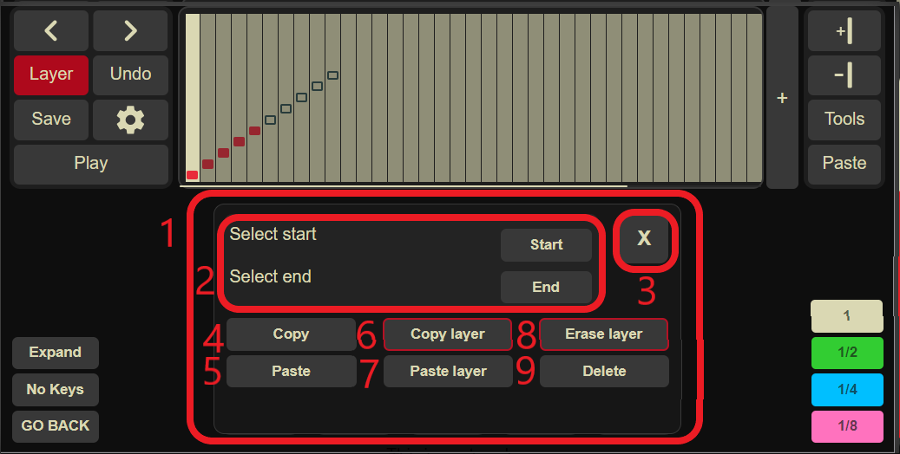

Q: How do i record a song? A: You press the "start/stop recording" button, play your song, then press the button again,
you will be then asked to add a name for the song, remember, you can't have two songs with the same name!
Q: How do i play a song i recorded? A: Press the "manage recordings" button and press the name of the song you want to play
Q: How can i download a song from the song library? A: Go to the Song Library, find a song you like then press the download button
Q: How do i import a song? A: Press the "manage recordings" button and press "import songs", then chose the text file of the song you want to import
Q: How can i practice a song? A: To practice a song, go to "manage recordings" then press the "🎯" button of the song you want to practice.
Then on the keyboard you will see red notes and notes with a blue border, the red notes are the ones you have to press
,the blue border notes are the ones you will have to press after.
You should ideally press the note color once it becomes fully red, this means you are on tempo.
You can also always disable the animation and blue borders from the settings
Q: How do i share/download a song i recorded? A: Press the "manage recordings" button then press the download button on the very left of the song,
this will download a text file that then you can share with other people
Q: How do i make an account? A: Just like in any other website! press the settings icon, then "Account"
and then you can create or login an account from there
Q: How do i save a song to my account? A: Press the "manage recordings" and then press the button on the left of the download
button (the one with a cloud)
Q: How do i change instruments? A: You can change instruments by pressing the button on the right of "start/stop recording"
Q: How do i change the pitch of my instrument? A: Press the button on the right of the instrument selection, the pitches go from 1 to 12
Q: How do i turn on "Cave mode"(reverb) A: Press the button on the right of the pitch selection, this will toggle on/off the "cave mode"
Q: Can i stop a song from playing? A: Once you play or practice a song, you can always stop it by pressing the button on the right of the "cave mode"
Q: How do i retry a song i'm practicing? A: Once you start to practice a song, a slider on the right (or bottom) will appear, on the bottom there is a "retry"
button that you can press to start again the practice from 0, you can also change when to make it start by selecting the note
number with the slider.
Q: How do i share a song? A: You can either download the song and send the file, or if the song is saved in your
account, you can press the share icon, a link will be copied that you can then share around, if you
delete your song, the link will not be valid anymore!
Q: I'm on computer, can i still use the website? A: Yes! You can use the keyboard of your computer to play, imagine a square
on your keyboard, it starts from E and ends to M
Q: When i play music my tab moves/or changes page! A: This is an iOS problem, to fix it just go to the "share" button on the top of your browser and press
"Add to home", this will add the website to the home page of your phone and you will be able to enjoy it better!
Q: I have a MIDI keyboard, is it supported? A: Yes! This is one of the most exciting features, you can directly connect your midi keyboard to the phone/pc
and play the keyboard (test out if your keyboard has the correct range, it starts from keyNote 36 and ends to 60).
WARNING: this only works on chrome!
Q: Nothing plays on the website! A: If you are on iOS, if you go to another website or go to the home then come back to the website, you have to
refresh, it's an iOS problem and we are trying to find a fix for it, You can enable "auto refresh" in the settings to temporarely fix it.
Q: I'm on phone, the browser search bar blocks the website A: whenever you press a note, the website should become full screen, if it doesn't, scroll down untill you can't see it anymore
Q: How can i exit exit fullscreen? A: There is a button on the bottom left to exit the full screen, alternatively you can just "go back" on your phone
Buttons descriptions
Main page
1: Keyboard.
2: Where all your songs are stored
3: To start and stop recording a song.
4: Instrument selection.
5: Pitch selection.
6: Cave mode (reverb).
7: Menu.
7: Play the song.
8: Shows more buttons for the song.
9: Practice the song.
10: Save the song to your account.
11: Download the song.
12: Delete the song.
13: Songs saved locally
14: Songs saved into your account
15: Open the song composer
16: Import songs as ABC1-5 format, .txt or midi
17: Note to press now.
18: Note to press after the red note.
19: Slider to retry the song, select which note to restart from.
20: Stop practice/playing song.
Composer
1: Keyboard.
2: Tempo changers for 1, 1/2, 1/4, 1/8th time
3: Cells (the columns) that contain first layer notes
4: Cells (the columns) that contain second layer notes
5: Adds a page (24 columns)
6: Add or remove cells (from where you selected)
7: Opens the tools menu.
8: Opens the settings.
9: Saves the song.
10: Switches layer.
11: Moves to the next/previous cell
12: Removes most of the upper buttons to make more cells fit
13: Disables the keyboard so that you can play freely.
14: Goes back to the main page.
1: Selects the instrument for the first layer.
3: Selects the instrument for the second layer.
3: Change volume of the instrument.
4: Change the pitch.
5: Toggle the "cave mode"(reverb).
6: Import a midi file.
7: Opens the songs that you saved.
8: Adds beatmarks to the compositon (divisions for each 3-4 notes).
9: Downloads the songs as .txt
1: Import midi Menu.
2: Pushes up/down all the notes to select the correct range of notes.
3: Selects the midi track layer, the (12) is the number of tracks that are in a song.
Usually different tracks mean different instruments, you can select which track to import.
4: Selects all tracks/layers.
5: Changes the bpm of the song, higher bpm could lead to higher import precision.
6: Might make the import more accurate or make it worse, try if it's better with or without.
7: If there are notes above the note range, it scales them down by 8 notes to try and make them sound correct.

1: Tools menu.
2: Buttons to select the starting and ending cells.
3: Close the menu.
4: Copy Both layers.
5: Paste both layers.
6: Copy only selected layer (you can change which layer by pressing the "layer button").
7: Paste only one layer.
8: Erase only selected layer.
9: Deletes all selected cells
If you wish to read our policy you can find it here